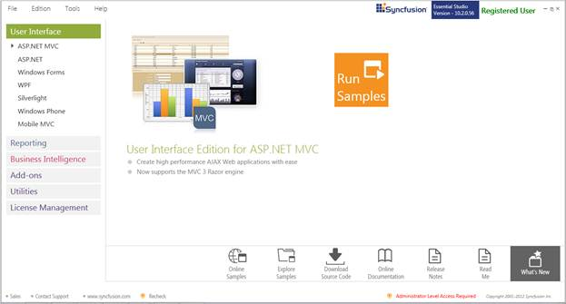
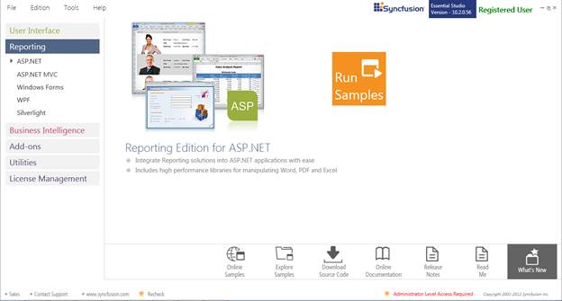
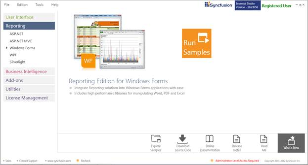
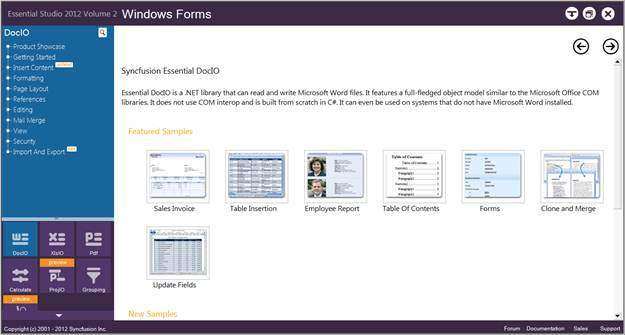
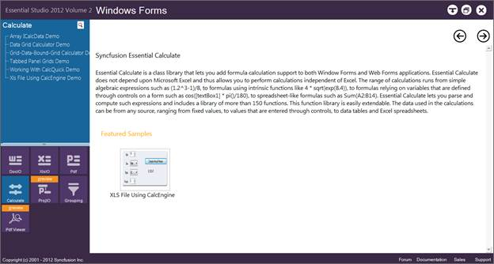
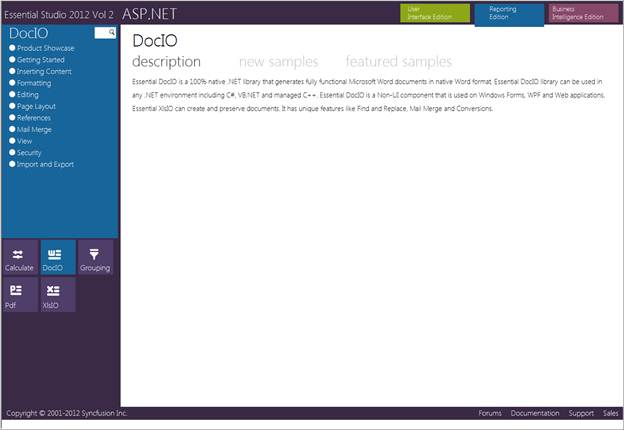
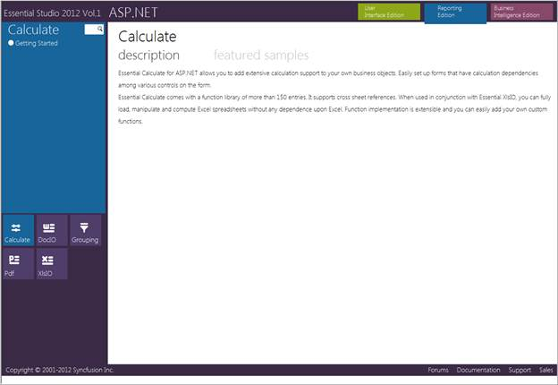

Where to Find Samples?
This section covers the location of the installed samples and describes the procedure to run the samples through the sample browser and online. It also lists the location of utilities, assemblies, and source code.
Sample Installation Location
The Windows Forms Calculate samples are installed in the following location, locally on the disk:
[Install Location]:\...\Syncfusion\Essential Studio\[Version Number]\Windows\Calculate.Windows\Samples\2.0
The Calculate Web samples are installed in the following location, locally on the disk:
[Install Location]:\...\Syncfusion\Essential Studio\[Version Number]\Web\Calculate.Web\Samples\3.5
Viewing Samples
To view the samples:
1. Click Start à All Programs à Syncfusion à Essential Studio <version number> à Dashboard.
Essential Studio UI Edition Samples are listed by default.

Figure 2: Syncfusion Essential Studio Dashboard
2. Select Reporting edition.

Figure 3: Syncfusion Essential Reporting Samples
3. The steps to view the Calculate samples in various platforms are discussed below:
Windows Forms
1. In the Dashboard window, click Run Samples for Windows Forms under Reporting Edition panel.
 Note: You can view the samples in any of the
following three ways:
Note: You can view the samples in any of the
following three ways:
· Run Samples – Click to view the locally installed samples.
· Online Samples – Click to view online samples.
· Explore Samples – Explore Windows Forms samples on disk.

Figure 4: View Options Displayed for Samples
The Windows Forms Sample Browser window is displayed.

Figure 5: Calculate Samples displayed on the Contents Pane
2. Click Calculate in the Contents tab on the bottom-left pane. The Calculate samples are displayed.

Figure 6: Calculate samples displayed in the Windows Forms Sample Browser
3. Select any sample and browse through the features.
ASP.NET
1. In the Dashboard window, click Run Samples for ASP.NET under Reporting Edition panel. The ASP.NET Sample Browser window is displayed.
Note: You can view the samples in any of the
three options displayed.

Figure 7: ASP.NET Sample Browser
2. Click Calculate from the bottom-left pane. The Calculate samples are displayed.

Figure 8: Calculate samples displayed in the ASP.NET Sample Browser
3. Select any sample and browse through the features.
Source Code Location
Windows Forms Source Code
The default location of the Windows Forms Calculate source code is:
[System Drive]:\Program Files\Syncfusion\Essential Studio\[Version Number]\Windows\Calculate.Windows\Src
ASP.NET Source Code
The default location of the ASP.NET Calculate source code is:
[System Drive]:\Program Files\Syncfusion\Essential Studio\[Version Number]\Web\Calculate.Web\Src